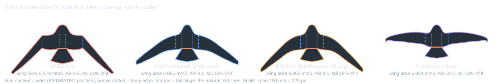

Swift outline v4: two candidates that follow the real glide pose
Tags: DIGITISED (measured by us from published bird figures, 5-10% error), CITED, CALCULATED, MODEL (AVL: inviscid, outline only, body ignored), JUDGEMENT, ESTIMATE (the data file's own estimate), PROPOSED. Source of the bird numbers: research/birds/planform_and_gliding.md. 52 AVL runs were made (serial, 10 x 80 panels unless stated). Nothing here was flown or built.
1. Summary: A and B are two candidates
| outline | aspect ratio: two wings alone / with body strip | NP % MAC [MODEL] | tail bend for 8% / 10% margin, deg [MODEL] | trim CG at 10% margin, mm (250) [MODEL] | nose weight / all-up mass at 8% margin: printed / foam | at 10% margin | Cn_beta, no fin | Cl_beta | tip loading [indicator] | all-up mass g, printed / foam [CALCULATED] | existing-threshold items not met | not met under the proposed alternative |
|---|---|---|---|---|---|---|---|---|---|---|---|---|
| A as measured (glide pose) | 8.5 / 9.1 | 30.1 | 4.8 / 6.0 | 23.1 | 17% / 11% | 18% / 12% | +0.0030 | -0.0399 | 1.17 | 9.3 / 9.8 | Cn_beta with no fin, per rad | none |
| B hybrid | 8.5 / 9.1 | 29.1 | 6.3 / 7.9 | 26.5 | 13% / 7% | 14% / 9% | +0.0041 | -0.0526 | 1.15 | 8.9 / 9.4 | none | none |
| C extended pose (comparison) | 10.1 / 10.7 | 31.4 | 1.9 / 2.4 | 4.0 | 58% / 50% | 61% / 52% | +0.0003 | -0.0034 | 1.18 | 16.8 / 15.7 | nose weight / all-up mass, printed, at an 8% margin; nose weight / all-up mass, foam, at an 8% margin; Cn_beta with no fin, per rad; Cl_beta (stable sign) | nose weight / all-up mass, printed, at an 8% margin; nose weight / all-up mass, foam, at an 8% margin; Cn_beta with no fin, per rad; Cl_beta (stable sign) |
Two candidates, not a recommendation. A is the measured glide pose: the 30 degree setting's chord law, leading-edge sweep and aspect ratio, as faithfully as a flat sheet allows. It answers the original request most directly. B is a hybrid, not a measured shape: it keeps A's chord law and aspect ratio but raises the hand leading-edge sweep by 8 degrees, to a value between the bird's 30 and 50 degree settings; the real bird at that sweep has less span and a more even chord, so B does not exist in the bird. The reason to consider B is less nose weight: 12.5% against 16.5% of the all-up mass printed, 7.0% against 10.7% foam (at an 8% margin), for a larger tail bend (7.9 against 6.0 degrees for a 10% margin).
The yaw floor is not a reason. The Cn_beta floor of 0.004 has no evidence behind it (section 4). A has +0.0030 and B +0.0041, but Cn_beta rises smoothly with the hand sweep and nothing happens at 0.004. Neither outline is known to be yaw-stable without a fin. Which to build first is Kai's choice; cutting both in foam is the informative test. Everything here is MODEL.
Caveats that apply to every number: AVL's neutral point can carry up to about 5% MAC of panelling uncertainty with the tail in the wake plane; real flat plates lift 8-16% above AVL and their aerodynamic centre sits forward of AVL's (plate_balance); no force data exist for a flat plate cut to a bird outline at Re 15,000-40,000; AVL says nothing about stall. The build files use a 10% static margin, not the 8% floor: measured plates put the lift point 0 to 5% of the chord ahead of linear theory, so a nominal 8% could be only 3 to 5% in reality, which is where the pull-out study says the model cannot say.
2. Was the v2 shape what the real swift looks like? Partly, and the outer wing was too thin for its pose
Kai's complaint was a broad inner wing and a very thin outer wing. The comparison uses the measured chord distributions of the real swift (Lentink & de Kat 2014, research file sections 1.2 and 1.3) as chord divided by the mean chord of the wings alone, against position along the wing from the body edge to the tip.
| position along the wing | swift extended | swift 30 deg | swift 50 deg | ellipse | v2 BS final | v4 A | v4 C |
|---|---|---|---|---|---|---|---|
| 0.1 | 1.42 | 1.32 | 1.19 | 1.27 | 1.41 | 1.36 | 1.40 |
| 0.3 | 1.27 | 1.17 | 1.07 | 1.21 | 1.29 | 1.20 | 1.25 |
| 0.5 | 1.13 | 1.02 | 0.95 | 1.10 | 1.05 | 1.05 | 1.11 |
| 0.7 | 0.84 | 0.83 | 0.89 | 0.91 | 0.82 | 0.85 | 0.83 |
| 0.8 | 0.69 | 0.70 | 0.89 | 0.76 | 0.66 | 0.72 | 0.68 |
| 0.9 | 0.45 | 0.56 | 0.74 | 0.55 | 0.47 | 0.58 | 0.44 |
| 0.95 | 0.31 | 0.44 | 0.57 | 0.39 | 0.38 | 0.45 | 0.34 |
What the numbers say. Against the measured EXTENDED swift the v2 chord law differs by 0.06 (rms, in units of the mean chord), inside the 5-10% digitising error, so the broad root is real. But v2 was drawn with a hand sweep of about 50 degrees, and at that sweep the real bird's chord is far fuller outboard: 0.89 at 0.8 and 0.74 at 0.9 of the wing (research file section 1.3), against v2's 0.66 and 0.47. So the outer wing of v2 was too thin for the pose it was drawn in; Kai's eye was right. The bird at that sweep also has only 0.66 of its span; a gliding swift holds 0.85 to 0.90, close to the 30 degree setting. The other bird-unlike things in v2: the wrist at 40% of the half span against an ESTIMATED 20-25%, and the pairing of an extended-wing chord law with a swept hand. A pointed tip is itself bird-like (the bird's chord at 0.94 of the wing is 0.34 of the mean, v2 has 0.40); the problem was the pairing, not the taper alone.

3. Outline A, the glide pose as measured
Recipe parameters (all free numbers) and where each comes from:
| parameter | value used | tag | basis |
|---|---|---|---|
| ar_target | 8.50 for the two wings alone (body strip excluded); 9.12 with the body strip | DIGITISED | 8.5 at the 30 deg setting, 10.1 extended [my calc in the data file]; applied here to the two wings alone, body strip excluded (the data file quantity); with the body strip the aspect ratio is about 0.6 higher |
| body_half | 0.05 b (width 25 mm at 250) | CALCULATED | body width about 0.10 of span from the frontal area (Henningsson 2014), so half width 0.05 b |
| wrist_eta | 0.139 of the wing = 0.225 of the half span (28 mm from the centreline at 250) | ESTIMATE | wrist at 0.20-0.25 of the half span from the centreline (arm 0.10-0.15 of the half span after a body of 0.10); NOT a published number |
| chord_knots | 0: 1.32; 0.1: 1.32; 0.3: 1.17; 0.5: 1.02; 0.7: 0.83; 0.8: 0.7; 0.9: 0.56; 0.95: 0.44; 1: 0.3 | DIGITISED | chord / mean chord from Lentink & de Kat 2014 fig 4A (extended) and fig 2 (30 deg), plus 5-10 % error |
| min_chord | 0.03 b = 7.5 mm at 250, 12 mm at 400 | JUDGEMENT | minimum buildable chord 3 % of span; not confirmed by Kai |
| le_arm_deg | 11 deg back | DIGITISED | inner leading edge 11 deg back at 30 deg setting, 9 deg forward extended |
| le_hand_knots | 0.5: 37 deg; 0.75: 37 deg; 1: 44 deg | DIGITISED | 37 deg over 0.5-0.9 of the wing and 44 deg over the last 25 % at 30 deg setting; 6 deg rising to 17 deg and 26 deg extended |
| tail_len | 0.104 b (26 mm at 250) | CALCULATED | solved so the fan tail area is 0.185 x the wing area (Henningsson 2011 lift coefficients as quoted in the data file); the feather length 0.19-0.23 b in a search excerpt includes the fork and the covert overlap |
| tail_spread | 0.23 b (58 mm): the SLOW-speed (7 m/s) value; the bird furls it to 0.10 b at 11 m/s | CITED | 0.23 of span at 7 m/s (Henningsson 2011), 0.10 furled at 11 m/s |
| tail_neck | 0.1 b (25 mm) | JUDGEMENT | tail base as wide as the body (0.10 b); structural minimum from v2 arithmetic |
| hinge_gap | 0 b | JUDGEMENT | tail hinge distance behind the wing trailing edge at the neck |
| nose | 0.09 b (22 mm) | JUDGEMENT | no data on the head / neck length ahead of the shoulder |
Aspect ratio. The data file's 8.5 (glide pose) and 10.1 (extended) are for the two wings alone, without the body. The outlines were built so that the two wings alone have exactly those values; with the body strip included (the way the sheet area, and the AVL area, is counted) they come out at 9.12 for A and 10.73 for C. In outlines.csv both values are given.
Resulting planform at 250 mm span [CALCULATED from the recipe]: root chord 36.0 mm, chord at the wrist 35.7 mm, mean chord of the wings 26.5 mm, tip chord 8.2 mm (the minimum buildable chord truncates the point). Area split: body strip 13%, arm wing 16%, hand wing 71% of the wing area (6,855 mm²). Fan tail 1,268 mm² (18.5% of the wing area), nose and root blend (body) 538 mm² (sheet total 8,661 mm²). The chord law reproduces the measured 30 degree values with rms 0.026 of the mean chord, and C the measured extended values with rms 0.024.
What a flat sheet cannot copy (from the data file)
- Camber, and the thickness change from the arm to the hand: a flat plate makes less lift and stalls earlier. No flat-plate force data for a bird outline at our Reynolds number exist.
- Twist or washout, feather gaps and slots, feather roughness (1-2% of the chord), the porous tip, and the change of span, sweep and tail spread with speed (only a folding mechanism could).
- The tail fork (depth NOT FOUND) and the tail carrying and trimming lift in flight: the sheet has a rounded fan tail bent once on one hinge.
- The pointed tip: a sheet needs a minimum chord (JUDGEMENT, not confirmed by Kai).
Departures that remain in A, and what each costs
- Minimum chord at the tip: the tip chord is 8.2 mm instead of a point; the bird's chord at 0.95 of the wing is 0.44 of the mean (11.7 mm here), so only the last 5% differs.
- Fan tail instead of a fork, its length solved so its area is the bird's 18.5% of the wing area (CALCULATED from lift coefficients 0.96 and 0.81); the search-excerpt feather length (0.19-0.23 b) would give a tail with about twice that area. Cost: unknown. The tail spread is the slow-speed value.
- Nose 0.09 b: no head or neck data; it only changes ballast (a longer nose helps, see section 5).
- The wrist is an ESTIMATE; its effect is in section 6.
4. The thresholds, one number each
Each criterion is shown as its own number for A, B and C, under the existing (v2) thresholds, which are unchanged, and under an alternative I label PROPOSED where I think a threshold is arbitrary. Kai decides.
A as measured
| criterion | value | existing limit | existing | PROPOSED alternative | proposed |
|---|---|---|---|---|---|
| static margin reachable with a bend up to 10 deg | bend for 8% margin = 4.8 deg | at most 10 deg | met | at most 10 deg | met |
| nose weight / all-up mass, printed, at an 8% margin | 16.5% | below 20% | met | below 25% | met |
| nose weight / all-up mass, foam, at an 8% margin | 10.7% | below 20% | met | below 25% | met |
| Cn_beta with no fin, per rad | +0.0030 | at least 0.004 | NOT MET | at least 0.002 | met |
| Cl_beta (stable sign) | -0.0399 | below -0.005 | met | below -0.005 | met |
| tip loading indicator | 1.17 | not above v1 1.29 + 1% | met | information only (v1 = 1.29) | met |
| tail neck width vs structural minimum (hinge 0.4 mm, load factor 5) | 25.0 mm vs minimum 10.0 mm | neck at least the minimum | met | neck at least the minimum | met |
| trim CG behind the nose tip | 23.7 mm vs nose tip -22.5 mm | at least 3 mm behind | met | at least 3 mm behind | met |
B hybrid
| criterion | value | existing limit | existing | PROPOSED alternative | proposed |
|---|---|---|---|---|---|
| static margin reachable with a bend up to 10 deg | bend for 8% margin = 6.3 deg | at most 10 deg | met | at most 10 deg | met |
| nose weight / all-up mass, printed, at an 8% margin | 12.5% | below 20% | met | below 25% | met |
| nose weight / all-up mass, foam, at an 8% margin | 7.0% | below 20% | met | below 25% | met |
| Cn_beta with no fin, per rad | +0.0041 | at least 0.004 | met | at least 0.002 | met |
| Cl_beta (stable sign) | -0.0526 | below -0.005 | met | below -0.005 | met |
| tip loading indicator | 1.15 | not above v1 1.29 + 1% | met | information only (v1 = 1.29) | met |
| tail neck width vs structural minimum (hinge 0.4 mm, load factor 5) | 25.0 mm vs minimum 10.0 mm | neck at least the minimum | met | neck at least the minimum | met |
| trim CG behind the nose tip | 27.1 mm vs nose tip -22.5 mm | at least 3 mm behind | met | at least 3 mm behind | met |
C extended
| criterion | value | existing limit | existing | PROPOSED alternative | proposed |
|---|---|---|---|---|---|
| static margin reachable with a bend up to 10 deg | bend for 8% margin = 1.9 deg | at most 10 deg | met | at most 10 deg | met |
| nose weight / all-up mass, printed, at an 8% margin | 57.6% | below 20% | NOT MET | below 25% | NOT MET |
| nose weight / all-up mass, foam, at an 8% margin | 49.6% | below 20% | NOT MET | below 25% | NOT MET |
| Cn_beta with no fin, per rad | +0.0003 | at least 0.004 | NOT MET | at least 0.002 | NOT MET |
| Cl_beta (stable sign) | -0.0034 | below -0.005 | NOT MET | below -0.005 | NOT MET |
| tip loading indicator | 1.18 | not above v1 1.29 + 1% | met | information only (v1 = 1.29) | met |
| tail neck width vs structural minimum (hinge 0.4 mm, load factor 5) | 25.0 mm vs minimum 10.0 mm | neck at least the minimum | met | neck at least the minimum | met |
| trim CG behind the nose tip | 4.5 mm vs nose tip -22.5 mm | at least 3 mm behind | met | at least 3 mm behind | met |
The Cn_beta floor of 0.004 has no evidence behind it
| hand leading-edge sweep added to A | +0 deg | +4 deg | +6 deg | +7 deg | +8 deg | +10 deg |
|---|---|---|---|---|---|---|
| Cn_beta, no fin [MODEL] | +0.00302 | +0.00354 | +0.00382 | +0.00398 | +0.00413 | +0.00446 |
Cn_beta rises smoothly with the hand sweep; nothing happens at 0.004, which was our own choice. B clears the floor by only 3.2% with the estimated wrist (0.139 of the wing); with the wrist at 0.2 it is 0.3% under the line, i.e. on it. Neither A nor B is known to be yaw-stable without a fin. In the earlier AVL comparisons for the P07 flat wing (a different outline, 25 degree sweep, 3 degrees of dihedral) Cn_beta was 0.0016 bare, about 0.008 with 4% tip fins and 0.017 with a 6% centre fin (rigid_glider/ARCH_COMPARISON.md, lateral table; rigid_glider/ARTICLE1.md), so fins change it by factors of 5 to 10, far more than the sweep changes here. The data file (research/birds/planform_and_gliding.md, section 3) says whether a flat swept plate is yaw-stable without a fin is NOT FOUND and advises planning for tip fins or a small fin until a test shows otherwise: a fin or tip fins are the fallback if either outline wanders in yaw.
Which thresholds are real for this project?
- Static margin window 8-15%: the floor is real in kind (a positive margin is needed; the neutral point is uncertain by about 5% MAC and a flat plate's aerodynamic centre sits forward of AVL's) but the number 8 is JUDGEMENT; the ceiling just limits the bend. Kept.
- Nose weight under 20% of the all-up mass: real as a cost, but 20% is inherited from our own v2 choice. PROPOSED alternative 25%, shown as a second column.
- Cn_beta floor 0.004 with no fin: arbitrary (above). PROPOSED alternative: any value clearly above the AVL noise, 0.002, until a flight says otherwise.
- Tip loading not above the v1 outline: inherited; v1 was itself arbitrary and the indicator has no demonstrated link to stalling for a flat plate. PROPOSED: report it, do not gate on it.
- Neck minimum: real (a 0.4 mm hinge strip must carry the tail load) but rests on ASSUMED strength.
5. Outline B: a hybrid that trades a larger tail bend for less nose weight
Single departures from A, each tried alone (AVL, bend 0 and 5 deg). Items not met are the existing thresholds.
| departure | aimed at | Cn_beta | bend for 8% margin, deg | ballast printed / foam at 8% | tip loading | NP % MAC | existing-threshold items not met |
|---|---|---|---|---|---|---|---|
| A (reference) | +0.0030 | 4.8 | 16.5% / 10.7% | 1.17 | 30.1 | Cn_beta with no fin, per rad | |
| hand leading-edge sweep +4 deg | yaw stiffness | +0.0035 | 5.4 | 14.4% / 8.7% | 1.16 | 29.7 | Cn_beta with no fin, per rad |
| hand leading-edge sweep +6 deg | yaw stiffness | +0.0038 | 5.8 | 13.5% / 7.8% | 1.16 | 29.4 | Cn_beta with no fin, per rad |
| hand leading-edge sweep +7 deg | yaw stiffness | +0.0040 | 6.1 | 13.0% / 7.4% | 1.16 | 29.3 | Cn_beta with no fin, per rad |
| hand leading-edge sweep +8 deg | yaw stiffness | +0.0041 | 6.3 | 12.5% / 7.0% | 1.15 | 29.1 | none |
| hand leading-edge sweep +10 deg | yaw stiffness | +0.0045 | 6.9 | 11.7% / 6.2% | 1.14 | 28.6 | none |
| arm leading-edge sweep 11 -> 20 deg | yaw stiffness | +0.0033 | 6.7 | 10.8% / 5.4% | 1.18 | 30.4 | Cn_beta with no fin, per rad |
| tail spread 0.23 -> 0.30 of span | tail authority / yaw | +0.0033 | 3.1 | 17.9% / 11.9% | 1.23 | 30.7 | Cn_beta with no fin, per rad |
| tail length x 1.4 | tail authority | +0.0030 | 3.4 | 20.5% / 14.3% | 1.17 | 31.9 | nose weight / all-up mass, printed, at an 8% margin; Cn_beta with no fin, per rad |
| tail hinge 0.03 b behind the wing trailing edge | tail lever | +0.0030 | 3.3 | 15.2% / 10.4% | 1.15 | 31.7 | Cn_beta with no fin, per rad |
| nose 0.09 -> 0.15 of span | ballast | +0.0030 | 4.8 | 12.9% / 7.6% | 1.17 | 30.1 | Cn_beta with no fin, per rad |
| aspect ratio of the two wings 8.5 -> 9.5 | ballast / efficiency | +0.0030 | 4.7 | 14.4% / 9.0% | 1.17 | 30.3 | Cn_beta with no fin, per rad |
| body half width 0.05 -> 0.035 of span | mass | +0.0032 | 4.9 | 17.6% / 11.4% | 1.18 | 29.5 | Cn_beta with no fin, per rad |
B = A with the hand-wing leading-edge sweep +8 deg (knots 37/37/44 deg become 45/45/52 deg). It is the smallest step in the search that is at least 2% above the 0.004 floor in Cn_beta while meeting the other existing thresholds in this model. Disclosure: the margin rule was first 5%, which gives +10 deg (Cn_beta +0.0045); I changed it to 2% when the panelling check showed Cn_beta moves by under 1%. Either margin is arbitrary and the floor itself has no evidence, so +8 and +10 deg are equally defensible. What B buys: nose weight at an 8% margin 16.5% to 12.5% printed (10.7% to 7.0% foam); at a 10% margin printed 18.4% to 14.3%; Cn_beta +0.0030 to +0.0041. What it costs: less tail authority (0.0050 to 0.0038 CM0 per degree, so 6.0 to 7.9 deg of bend for a 10% margin) and a neutral point moved from 30.1 to 29.1% MAC. B is a hybrid: the chord law and aspect ratio of the 30 degree pose with a hand sweep between the 30 and 50 degree poses, where the real bird has less span and a more even chord. The nose and hinge gap reduce ballast but do nothing for Cn_beta.
6. Outline C and the wrist
C is the 5 degree setting (aspect ratio 10.1 for the two wings alone, 10.7 with the body strip; arm leading edge 9 degrees forward, hand sweep 6 to 17 degrees rising to the tip). It is for comparison and for the later folding work, and with the existing thresholds it is far off: Cn_beta +0.0003, Cl_beta -0.0034 (barely stable), and nose weight 58% printed / 50% foam at an 8% margin, because the bare CG sits 29% MAC behind the neutral point; the tail is very effective here (0.0127 CM0 per degree, 1.9 deg for an 8% margin).
Sensitivity to the wrist position (an ESTIMATE in the data)
Wrist positions are in the file's units, fractions of the wing from the body edge to the tip; the half-span equivalents are in the second column.
| outline | wrist, fraction of the wing (half span) | NP % MAC | bend for 8% margin | ballast printed / foam at 8% | Cn_beta | Cn_beta vs the 0.004 floor | tip loading | existing-threshold items not met |
|---|---|---|---|---|---|---|---|---|
| A | 0.139 (0.225) | 30.1 | 4.8 | 16.5% / 10.7% | +0.0030 | -24.4% | 1.17 | Cn_beta with no fin, per rad |
| A | 0.2 (0.280) | 30.0 | 4.5 | 18.1% / 12.0% | +0.0029 | -26.7% | 1.16 | Cn_beta with no fin, per rad |
| A | 0.3 (0.370) | 29.8 | 4.1 | 20.3% / 14.1% | +0.0028 | -30.6% | 1.15 | nose weight / all-up mass, printed, at an 8% margin; Cn_beta with no fin, per rad |
| A | 0.4 (0.460) | 29.8 | 3.8 | 22.5% / 16.0% | +0.0026 | -34.8% | 1.15 | nose weight / all-up mass, printed, at an 8% margin; Cn_beta with no fin, per rad |
| B | 0.139 (0.225) | 29.1 | 6.3 | 12.5% / 7.0% | +0.0041 | +3.2% | 1.15 | none |
| B | 0.2 (0.280) | 28.9 | 5.6 | 14.3% / 8.6% | +0.0040 | -0.3% | 1.15 | Cn_beta with no fin, per rad |
| B | 0.3 (0.370) | 28.8 | 4.9 | 17.1% / 11.2% | +0.0037 | -6.3% | 1.14 | Cn_beta with no fin, per rad |
| B | 0.4 (0.460) | 28.8 | 4.3 | 19.6% / 13.4% | +0.0035 | -12.7% | 1.13 | Cn_beta with no fin, per rad |
Reading the table (wrist positions in the file's wing-fraction units; half-span equivalents 0.139 = 0.225, 0.2 = 0.28, 0.3 = 0.37, 0.4 = 0.46): A meets all existing thresholds at none of the wrist positions tried (it is under the Cn_beta line at every one, and its nose weight also passes the 20% limit only up to 0.2). B meets all of them only at [0.139]; at 0.2 its Cn_beta is +0.00399, which is on the line (within 0.3% of it, smaller than the panelling spread); at 0.3 and 0.4 it is 6% and 13% under it. So B's Cn_beta result depends on an estimated wrist position. The wrist here is where the leading-edge sweep starts to increase (and the natural fold line); moving it outboard shortens the hand and changes the ramp.
7. Panelling check (neutral point and Cn_beta)
| outline | panels (chord x span) | NP % MAC | CM0 at 5 deg | Cn_beta | Cl_beta | tip loading |
|---|---|---|---|---|---|---|
| A | 8 x 64 | 30.3 | +0.0250 | +0.0030 | -0.0399 | 1.17 |
| A | 10 x 80 | 30.1 | +0.0250 | +0.0030 | -0.0399 | 1.17 |
| A | 16 x 128 | 30.1 | +0.0250 | +0.0030 | -0.0399 | 1.16 |
| B | 8 x 64 | 29.2 | +0.0189 | +0.0041 | -0.0525 | 1.15 |
| B | 10 x 80 | 29.1 | +0.0190 | +0.0041 | -0.0526 | 1.15 |
| B | 16 x 128 | 29.1 | +0.0190 | +0.0041 | -0.0525 | 1.15 |
For these two outlines the neutral point moves by at most 0.2 points of MAC between 8 x 64 and 16 x 128 panels and Cn_beta by under 1%. That is smaller than the up to about 5% MAC seen with the tail in the wake plane on some v2 outlines, which remains the caveat to carry. Differences smaller than these spreads are not results.
8. Build files, pull-out depth and masses (both candidates)
Build files for A and B use a 10% static margin and each outline's own tail bend: the nearest angle on the field gauge (2, 2.5, 4, 5, 6, 7.5, 8 deg) to what it needs. Why 10% and not the 8% floor: measured plates put the lift point 0 to 5% of the chord ahead of linear theory, so a nominal 8% could be 3 to 5% in reality, which is where the pull-out study says the model cannot say.
| build | tail bend, deg | margin at that bend | trim CG, mm aft of root LE | sheet g | rail g | nose weight g (% of all-up) | all-up g | wing loading N/m² | first-swoop depth, m [MODEL]: formula to upper bound |
|---|---|---|---|---|---|---|---|---|---|
| A printed 250 mm | 6 | 10.0% | 23.1 | 6.45 | 1.17 | 1.72 (18%) | 9.34 | 13.4 | 11 to 28 |
| A foam 400 mm | 6 | 10.0% | 37.0 | 6.65 | 1.90 | 1.21 (12%) | 9.76 | 5.5 | 5 to 18 |
| B printed 250 mm | 8 | 10.1% | 26.5 | 6.45 | 1.17 | 1.29 (14%) | 8.90 | 12.7 | 11 to 27 |
| B foam 400 mm | 8 | 10.1% | 42.4 | 6.65 | 1.90 | 0.81 (9%) | 9.36 | 5.2 | 4 to 17 |
Pull-out depth. The lower number is 3 (W/S) / (rho g CL) at CL 0.3, the constant-lift-coefficient relation. The upper number multiplies it by the pull-out study's simulation-to-formula ratio for the bird outline (1.31 printed, 2.05 for the light foam bird) and by the factor for a tail that is only 50% as effective as AVL says (1.95; 1.29 at 75%) (results/runs/rigid_glider/pullout/cases.csv, MODEL). A 10 m drop may not be enough for the printed outline; the pull-out study's plates had aspect ratios 4 and 5, so the bird outlines (8.5) are an extrapolation.
What the bend rests on. The tail bend's effect comes from inviscid AVL for a small flat tail in the wing's wake at a chord Reynolds number near 10,000; it is unvalidated. If the real tail is less effective, the trim lift falls and the depth rises. The tail spread used (0.23 of the span) is the bird's slow-speed (7 m/s) value. Drop height and whether to add a nose-up input are Kai's decisions.
The bird's own CG (10% of the body length behind the shoulder, an all-species value) would be about 10 mm aft of the shoulder; the trim CGs above are mm aft of the root leading edge. The body (nose and root blend) adds 538 mm² to the sheet (0.40 g printed).
9. Where the fold lines fall (no folding design yet)
On every drawing and template the wrist (blue dashed; ESTIMATED position) and the body edge (purple dotted) are marked as fold-line candidates, plus the tail hinge (orange). For A they sit at 28 mm and 12 mm from the centreline at 250 mm span (45 mm and 20 mm at 400 mm); for B at 28 mm and 12 mm. They are markers only: nothing is cut or creased there.
10. Files
- A PLA plate 250 mm: drawing.svg, parts.dxf, rail.stl, sheet.stl, templates: template_page1.svg, template_page2.svg
- A foamboard 400 mm: drawing.svg, parts.dxf, rail.stl, templates: template_page1.svg, template_page2.svg
- B PLA plate 250 mm: drawing.svg, parts.dxf, rail.stl, sheet.stl, templates: template_page1.svg, template_page2.svg
- B foamboard 400 mm: drawing.svg, parts.dxf, rail.stl, templates: template_page1.svg, template_page2.svg


Templates for A, 1:1 Letter, white: A_templates.pdf. Templates for B, 1:1 Letter, white: B_templates.pdf. Tables: outlines.csv, criteria.csv, departures.csv, wrist_sensitivity.csv, panelling.csv, chord_comparison.csv. Drawings: outlines.svg, chord_overlay.svg.